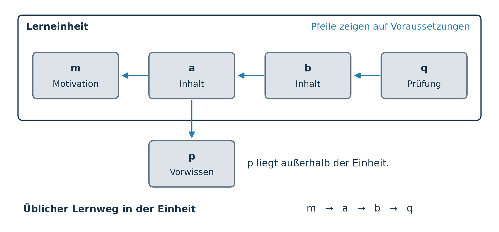
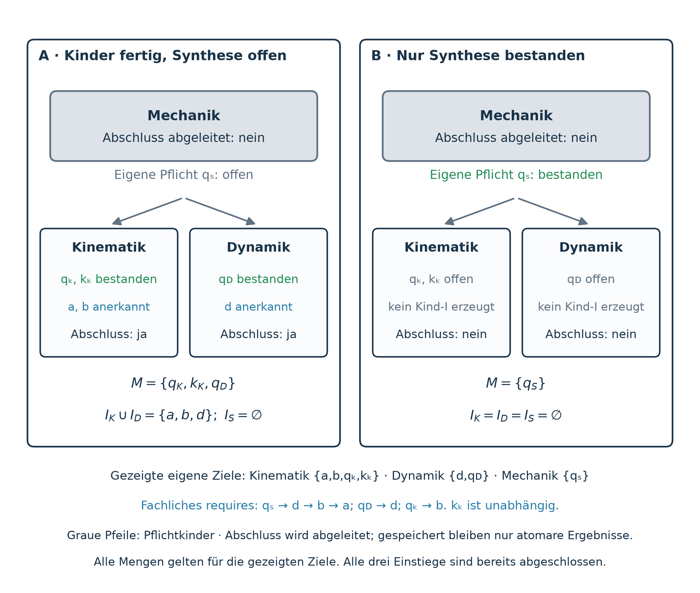

Rekursive Lerneinheiten (§§11.1–11.4)
Generated artifact. Do not edit manually.
Generated by:
docs/concept/skill-graph/build_spec.pyRegenerate with:cd app && npm run docs:skill-graph:webSource of truth:docs/concept/skill-graph/source/
Sprache / Language: Deutsch (DE) · English (EN) | PDF: Deutsches PDF · English PDF
Kompendium: §§1–5 Kern · §§6–10 Kontext · §§11.1–11.4 Lerneinheiten · §11.5 Einheitsfolge · §12 Planung · §13 Anerkennung und Vorschlag · Anhänge B–F · Anhang A (Regeln & Ampel)
11. Erklärte Einheiten: Gliederung, Reihenfolge und Nachweis
Geltender Struktur- und Anerkennungsvertrag. Die Abschlussregel (10) und die Anerkennung vor dem Gesamtabschluss gelten weiter. Der abgegrenzte Vorschlag vom 19. November steht in Abschnitt 11.3 und in Abschnitt 13.7. „Zielmodell“ bezeichnet hier bestätigte Zielvorgaben. Der Product Owner hat den geführten Einheitsauftakt am 22. November bestätigt.
Eine Lerneinheit verbindet ein Lernversprechen mit einem zusammenhängenden Lernweg. Hat sie eigene Prüfungen, führt ein eigener Auftakt in das Thema ein und die Prüfungen zeigen am Ende, was die Person selbstständig anwenden kann.
Cluster, Einheit, Einheit mit Prüfungen
Ein Cluster gliedert Ziele. Eine ausdrücklich erklärte Einheit lässt sich im vorgesehenen Lernfluss an einem Stück bearbeiten. Eine Einheit mit Prüfungen belegt die selbstständige Anwendung ihrer eigenen Inhaltsziele durch eigene Prüfungen mit fachlich geprüfter Deckung. Eine prüfungsfreie Einheit kann Ziele und Untereinheiten ordnen. Fächer dienen in der Lernkarte als Filter.
Fachliche Einheiten und Planeinheiten
Fachliche Einheiten beschreiben einen Erkenntnisschritt, der länderübergreifend gilt. Planeinheiten gliedern den gemeinsamen Plan eines Landes und Dauermodells über die gewählten Fächer. Dazu gehören Stufen, Jahrgänge und Phasen. Dieselbe fachliche Einheit kann dadurch in verschiedenen Ländern zu unterschiedlichen Zeitpunkten vorgesehen sein.
11.1. Motivation und eigener fachlicher Anspruch
Das Lernversprechen der Einheit sagt, was Lernende danach können und wozu es nützt. Jede Einheit mit eigenen Prüfungen erhält genau ein eigenes Motivationsziel. Es ist ein atomares Orientierungsziel. Der Coach erhält das Lernversprechen und die Angaben zur aktiven Einheit vom Backend und zeigt den Nutzen möglichst an einer konkreten Situation. Beim Skalarprodukt könnte der Coach so beginnen: „Dein Weg auf der Karte führt schräg nach Nordosten. Am Ende kannst du zeigen, welcher Teil des Weges dich nach Osten bringt, und damit das Skalarprodukt erklären.“
Im Cockpit beginnt die Einheit mit einer fachlichen Szene, der Leitfrage, den Themen und dem Lernversprechen. Auf der grafischen Lernkarte stehen der Ort in der Kopfzeile und das eigene Motivationsziel als ersten Knoten im Graphen. Es trägt die Bezeichnung Einstieg und ist in Leserichtung mit den ersten regulären Lernschritten verbunden. Beim Öffnen einer Untereinheit steht deren eigener Einstieg am Anfang. Der Auftakt ist der erste Schritt des geführten Lernwegs. Erst nach seinem persönlichen Abschluss oder einer für dieses Ziel gültigen Anrechnung beginnt die Person ein Fachziel, eine Übung oder die Karten. Das Öffnen einer Einheit verändert kein Ergebnis. Bei der Rückkehr genügen der gespeicherte Stand und der nächste Schritt. Abschnitt 8.2 beschreibt das Abschlussangebot des Coachs.
Lernende können im Gespräch um eine kurze Wiederholung bitten. Liegen für die aktuelle Einheit passende Karten vor, kann der Coach sie auch anbieten, sobald ein Begriff erarbeitet ist. Die Person entscheidet, ob sie Karten übt oder an ihrer Frage weiterarbeitet. Nach den Karten greift der Coach die offene Frage am selben Lernziel wieder auf. Wer um eine Erklärung bittet, erhält sie im Gespräch. Die Wiederholung aktualisiert den Übungsstand der Karten. Ein ausdrücklich geforderter verifizierter Abruf hat seinen eigenen Nachweis.
Wie der Graph einen Lernweg abbildet, zeigt ein vereinfachtes Beispiel mit zwei Inhaltszielen. In Abbildung 10 benötigt die Prüfung \(\nd{q}\) das Inhaltsziel \(\nd{b}\), dieses benötigt \(\nd{a}\), und \(\nd{a}\) benötigt den Auftakt \(\nd{m}\). Die Pfeile zeigen vom Ziel zu seiner Voraussetzung. Wer die Einheit in der vorgesehenen Reihenfolge lernt, beginnt bei \(\nd{m}\) und gelangt über \(\nd{a}\) und \(\nd{b}\) zur Prüfung. Ob deren Aufgaben und Bewertung tatsächlich die Anwendung von \(\nd{a}\) und \(\nd{b}\) belegen, klärt das fachliche Deckungsreview.

Abbildung 10 — Vom Einstieg zur Prüfung: Beispiel für den vorgeschlagenen Einheiteneinstieg. Jeder blaue Pfeil zeigt auf eine direkte Voraussetzung. Im üblichen Lernweg wird die Kette in umgekehrter Richtung durchlaufen. Für \(\nd{a}\) kommt das externe Vorwissen \(\nd{p}\) hinzu. Ein bewusster direkter Versuch der Prüfung \(\nd{q}\) bleibt möglich.
Vorgeschlagene Kantenregel. Jedes eigene atomare Ziel außer den Orientierungszielen erreicht die Motivation der Einheit über einen Voraussetzungspfad. Das gilt auch für Übungsaufgaben, die als eigene Ziele geführt werden. Die Motivation setzt keine Inhalte voraus. Direkte Verweise auf sie stammen aus der zugehörigen Einheit. Ausgangspunkt sind die übrigen Voraussetzungen. Ein Werkzeug ergänzt die gewünschten Verbindungen und schreibt nur die direkten Motivationskanten, für die kein anderer Pfad besteht. So kann das erste eigene Inhaltsziel sowohl die Motivation als auch Vorwissen aus einer Untereinheit oder einem anderen Fach benötigen. Der vollständige Graph muss azyklisch und transitiv minimal sein.
Geschachtelte Einheiten. Wer die übergeordnete Einheit beginnt und von dort geführt in ein Kind wechselt, erlebt beide Einstiege in dieser Reihenfolge. Beim gezielten Direkteinstieg in das Kind zeigt dessen eigener Auftakt in einem Satz den Zusammenhang mit der Elterneinheit. Zwischen den beiden Motivationszielen besteht dafür keine fachliche Voraussetzung. Reine Gliederungseinheiten zeigen ihren Ort und ihre Kinder. Prüfungen lassen sich direkt versuchen. Beim Verlassen vor Abgabe gilt für die weitere geführte Arbeit wieder der offene Auftakt der gewählten Einheit.
Die Einheitsgrenze folgt einem fachlich bedeutsamen Erkenntnisübergang. Auch wenige, gut begründete Voraussetzungen können einen solchen Übergang tragen. Wo eine Kante fachlich fragwürdig ist, wird ihre Begründung unabhängig vom gewünschten Zuschnitt geprüft. Die Gestaltungskriterien beschreiben Beispiele.
Im Endausbau gehört jedes Inhaltsziel, auch ein experimentelles, als eigenes Ziel zu einer Einheit mit Motivation und Prüfungen. Deren Prüfungen liegen in ihrem Cluster und decken die eigenen Inhaltsziele gemäß R1 bis R5 ab. Eine übergeordnete Syntheseprüfung kann zusätzlich verlangen, dass die Person Inhalte mehrerer Kinder zusammen anwendet. Ein Aggregat ohne eigene Prüfungen kann seine Kinder allein durch die Reihenfolge verbinden. Während der Einführung dürfen prüfungsfreie Einheiten auch eigene Inhaltsziele ordnen.
Aufgaben und Bewertungsraster sollen wesentliche Fehlvorstellungen sichtbar machen. Zeigt sich eine Lernlücke, übt die Person gezielt weiter. Eine gleichwertige Aufgabenvariante kann beim nächsten Versuch zeigen, ob sie das Gelernte in einer neuen Situation anwenden kann. Für Wiederholungen gilt Abschnitt 8.4. Fehlt einem Inhaltsziel die fachlich belegte Deckung, besteht eine Prüfungslücke. Ihre Reparatur braucht geeignete Aufgaben, Lösungen und Bewertungsraster mit unabhängiger Prüfung.
11.2. Eigene Ziele, Untereinheiten und Gesamtumfang
Zu einer Einheit \(U\) gehören alle atomaren Ziele unter ihrem Cluster. Sie bilden den Gesamtumfang \(T(U)\). Die direkt untergeordneten Einheiten bilden \(\Children(U)\). Jedes Atom, das in keiner dieser Untereinheiten liegt, ist ein eigenes Ziel von \(U\). Ihre Menge ist \(\Own(U)\). Die direkten Untereinheiten und die eigenen Ziele zusammen heißen Kinder der Einheit. Ein dazwischenliegender Cluster, der lediglich gliedert, zählt bei dieser Zuordnung nicht als Einheit.
Der Gesamtumfang ist nicht leer. Bei einem Aggregat können sämtliche Ziele zu seinen Untereinheiten gehören. E1 macht die kleinste Einheit jedes enthaltenen Atoms eindeutig. Überlappende Referenzen erzeugen weder zusätzliche Ziele noch doppelte Fortschrittspunkte. Ziele und Einheiten ohne übergeordnete Einheit sind Kinder einer gedachten Wurzel. In einem vollständigen Landesplan liegt jedes Ziel unter einer der beiden Stufen; die bundesweite kanonische Gliederung ist kein Landesplan und darf Ziele neben ihren obersten Einheiten führen.
Darstellung im Einheiteneintrag
Der Eintrag in der Platzierungsschicht verweist auf den Cluster und führt Lernversprechen, Revision und gegebenenfalls after. Bei einer Einheit mit Prüfungen benennt er die Deckungsreviews der eigenen Prüfungen. Für den geführten Einstieg verweist die Einheit auf ihr eigenes Motivationsziel. Die Referenzen lassen die Ziel- und Prüfungsdaten an ihrer kanonischen Stelle.
Tabelle 5: Einheiteneintrag im bestehenden Vertrag und im Zielmodell.
| Gegenstand | Bestehender Vertrag | Zielmodell |
|---|---|---|
| Fachliche Einheit | programUnits, Art learningUnit, promise, promiseEn, revision |
Erklärter Cluster in derselben Platzierungsschicht; Lernversprechen und Revision bleiben. |
| Eigene Ziele und Kinder | goalPlacements mit relation: own, ohne context, sowie parentUnitId |
Aus contains und den geschachtelten Einheitenerklärungen abgeleitet. |
| Geführter Auftakt (Entscheidung vom 22. November) | Die drei bestehenden fachlichen Einheiten haben bereits ein Lernversprechen. | Eine Referenz auf genau ein eigenes Motivationsziel je Einheit mit eigenen Prüfungen. |
| Deckungsreviews | coverageReviews, höchstens ein Eintrag je eigener Prüfung, gebunden an Aufgaben- und Raster-Hashes sowie Reviewprotokoll |
Für Einheiten mit Prüfungen erforderlich. |
| Planeinheiten | Stufenplan-Grundlage unter v1.3, ohne aktivierten Landesplan |
Ein gemeinsamer Plan pro Land und Dauermodell; Sichten sind daraus abgeleitete Ausschnitte. |
| Abschluss und Ergebnisse | Keine gespeicherte Einheits-Mastery | Weiter abgeleitet; kein Rückwärtsschreiben auf Ziele und keine Anerkennung aus after. |
Stand der Umsetzung. Die drei fachlichen Einheiten im Paketvertrag 1.2 verwenden learningUnitsV1. E.1 und die Untereinheit zum freien Fall benennen den eigenen kanonischen Einstieg über unit.orientationGoalId, das es ab Einheitenmaterial Version 2 gibt. Für bestehende Materialien bleibt Version 1 lesbar. Der Validator prüft unter anderem R1, R3 und die eindeutige Zuordnung über own. Die Grundlage für Stufenpläne ist separat. Vor einem Wechsel von Fachankern zu Einheitsmotivationen müssen die Routenprüfungen diese Einstiege im jeweiligen Geltungsbereich erkennen.
Die Einführung der neuen Einheitenstruktur folgt auf die Messung F8. F9 bis F13 betreffen unter anderem Paketdarstellung, Validierung und Lernlaufzeit. Die fachlichen Korrekturen an Zielen, Voraussetzungen und Prüfungen aus K1 bis K13 können parallel mit aktuellen unabhängigen Nachweisen erfolgen. Ändert sich ein Ziel aus dem eingefrorenen V9-Register, entfällt für dieses Ziel die frühere Reviewübertragung.
11.3. Abschluss ohne zusätzlich gespeicherte Unit-Mastery
Die vollständige Einheit ist abgeschlossen genau dann, wenn ihre eigenen Ziele erfüllt und alle verpflichtenden Untereinheiten abgeschlossen sind:
Die Unterscheidung zwischen einem benötigten Anteil und der ganzen Einheit zeigt Abbildung 10. Angenommen, ein Physikziel braucht aus dieser Mathematikeinheit nur \(\nd{a}\). Dann gehören auch \(\nd{m}\) und das externe Vorwissen \(\nd{p}\) zum persönlichen Lernumfang. Sind beide und \(\nd{a}\) erfüllt, ist dieser Teil der mathematischen Vorbereitung erledigt. Zur vollständigen Mathematikeinheit gehören zusätzlich \(\nd{b}\) und die Prüfung \(\nd{q}\).
Abbildung 11 zeigt zwei Lernstände in der Mechanik. Im ersten sind Kinematik und Dynamik abgeschlossen, die gemeinsame Syntheseprüfung ist noch offen. Im zweiten ist die Syntheseprüfung bestanden, in den Untereinheiten fehlen noch Prüfungen und Kartenabrufe. In beiden Fällen ist die Mechanikeinheit insgesamt offen. Das ergibt sich aus den Zielergebnissen.

Abbildung 11 — Mechanik als rekursive Lerneinheit: Die Einstiege von Mechanik, Kinematik und Dynamik sind in beiden Fällen ausdrücklich abgeschlossen. Die Mengen zeigen nur die unten aufgeführten Ziele. Illustrative Hierarchie mit eigenständigen Kindverträgen. Fall A (links): Beide Kinder sind vollständig abgeschlossen, ihre Kompetenzen global anerkannt; die offene Syntheseprüfung \(\nd{q_S}\) hält allein den Elternabschluss offen. Fall B (rechts): Nur die Elternprüfung ist bestanden. Sie erzeugt keine Kindprüfungen, keinen Kartenabruf und keine Anerkennung der Kindkompetenzen. Graue Pfeile zeigen ausschließlich die Einheitshierarchie; die fachlichen Kanten stehen getrennt darunter. Im Bild sind \(\nd{q_K}\), \(\nd{q_D}\) und \(\nd{q_S}\) Prüfungsziele, \(\nd{k_K}\) ist ein Memorierziel, und \(\nd{a}\), \(\nd{b}\), \(\nd{d}\) sind Inhaltsziele. „Kind-I“ und „Eltern-I“ meinen die implizite Menge \(I_U\) der jeweiligen Einheit.
Vorschlag vom 19. November: repräsentativer Einheitenabschluss
Nicht übernommener Vorschlag. Eine erklärte fachliche Einheit kann ein begrenztes Lernversprechen auf einem benannten Niveau durch repräsentative Abschlussleistungen nachweisen. Das ist eine andere Aussage als die vollständige atomare Erfüllung nach der geltenden Gleichung (10). Pflichtarbeit an dieser Route würde enden, ohne übersprungene Einzelaktivitäten nachträglich als durchgeführt zu verbuchen. Bestehende atomare Lernaufträge behalten ihren Umfang.
Der vorgeschlagene Vertrag bindet Identität, Lernversprechen, Niveau, Fassung \(\rho\), eigene Pflichtbelege \(\operatorname{OwnEvidence}(U,\rho)\) und Pflichtkinder \(\Children_{\mathrm{req}}(U,\rho)\). Nur für diesen Vorschlag gilt:
\(\operatorname{Valid}\) verlangt im Vorschlag einen ausdrücklich erklärten und fachlich freigegebenen Vertrag mit tatsächlichen Pflichten; eine leere Pflichtliste genügt nicht. \(\rho_V\) bindet die Fassung des Kindes. Reine Aggregate können reale Pflichtkinder bündeln. Ohne freigegebenen Direktnachweis bleiben die vorgesehenen Einzelpflichten erforderlich. Jede eigenständige Pflichtprüfung braucht ihren eigenen gültigen Erfolg; ausdrücklich ausgewiesene Praxis- oder Abrufpflichten bleiben auf beiden Wegen bestehen. Eine eigene Durchführung ist keine pauschale Zusatzpflicht jeder Einheit. Wo aber der Anspruch eines einzelnen Atoms eine Durchführung verlangt, kann weder ein Gespräch noch die Prüfung dieses ganze Atom allein durch Auswertung bereitgestellter Daten belegen.
Die E.1-Probe verlangt vier Prüfungsteile A–D, je einen in jeder ihrer vier Kindstrukturen; nur die Struktur „Freier Fall schwerer Kugeln“ ist eine erklärte Einheit. Ein Kind kann seine eigenen gewöhnlichen Atome erst über seinen eigenen bestandenen und fassungsgebundenen Vertrag freigeben; der Elternabschluss erhält keine Zuständigkeit für Kind- oder fachfremde Atome. Die Einzelheiten, die bewusste Verzögerung der Freigabe und die offenen Entscheidungen stehen in Abschnitt 13.7.
11.4. Anerkennung vor dem Gesamtabschluss
Ein eigenes Inhaltsziel kann schon vor dem Gesamtabschluss als selbstständig angewandt gelten, ein Motivationsziel als erledigter Einstieg. Maßgeblich ist der gültige Vertrag der zuständigen Einheit (Abschnitt 13). Deshalb behält ein Kind seine bereits anerkannten Ziele, wenn die Syntheseprüfung der Elterneinheit noch offen ist.
Wie eine offene Prüfung oder ein offenes Lernkartenziel die Ableitung beeinflusst, zeigt Abbildung 14. Die Bindung an die Vertragsrevision regelt Abschnitt 13.4.